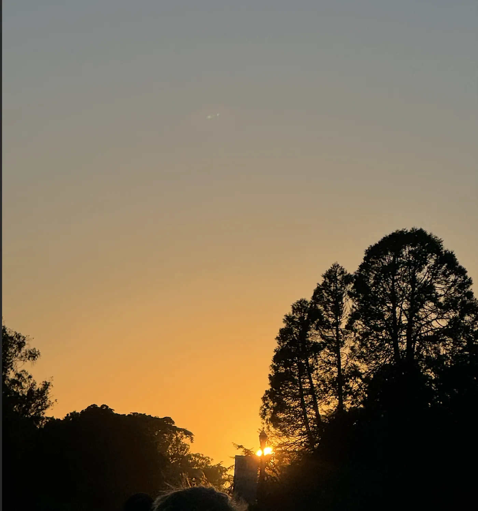
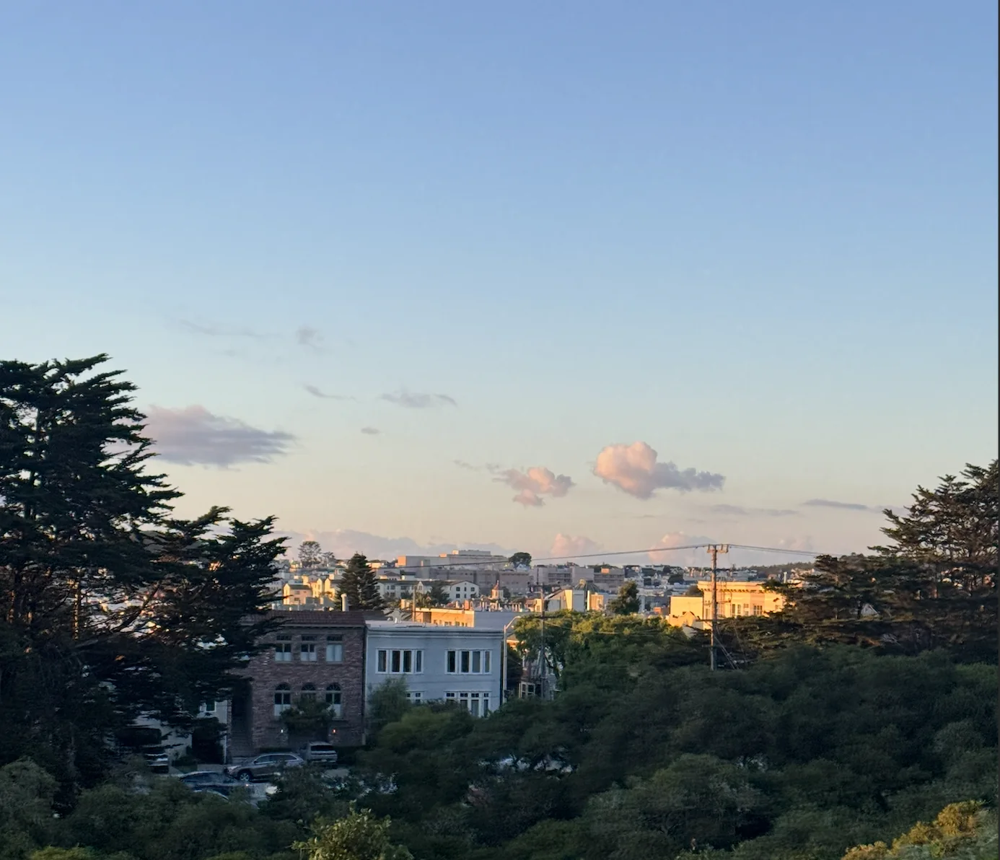
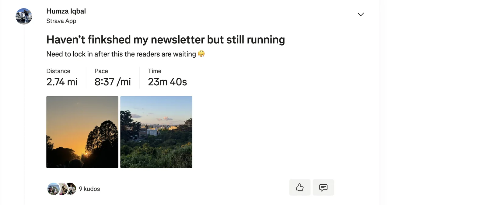
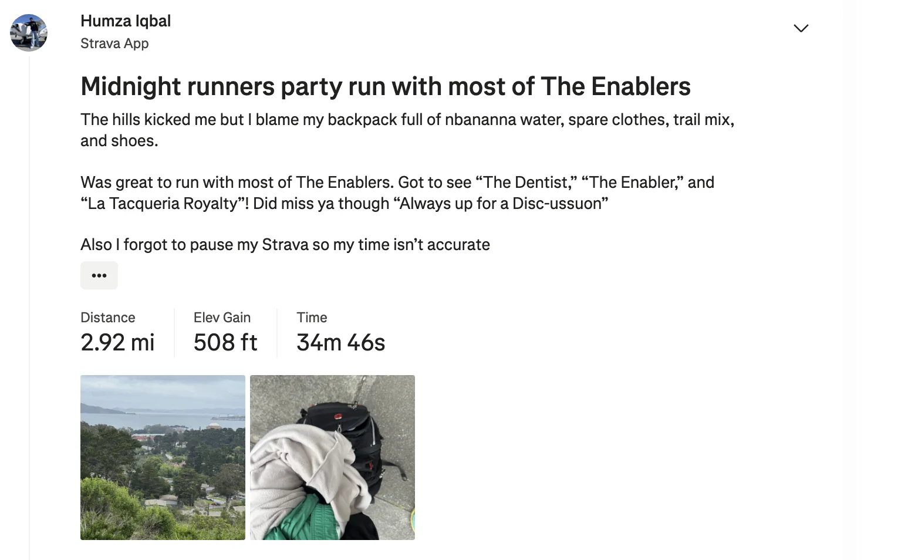
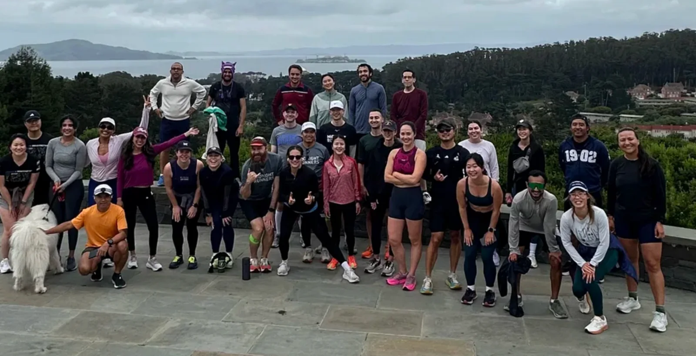
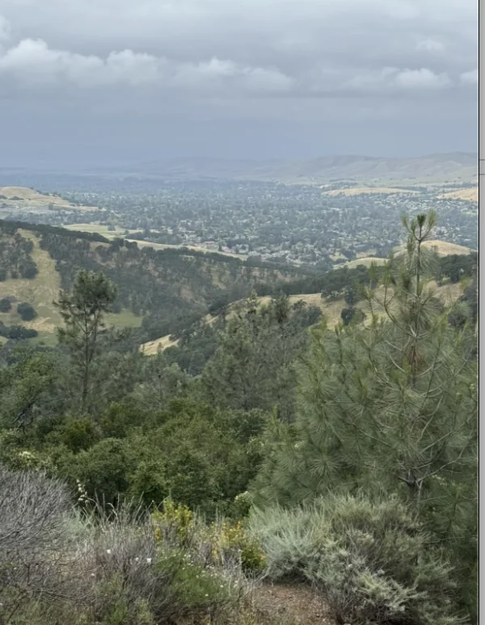
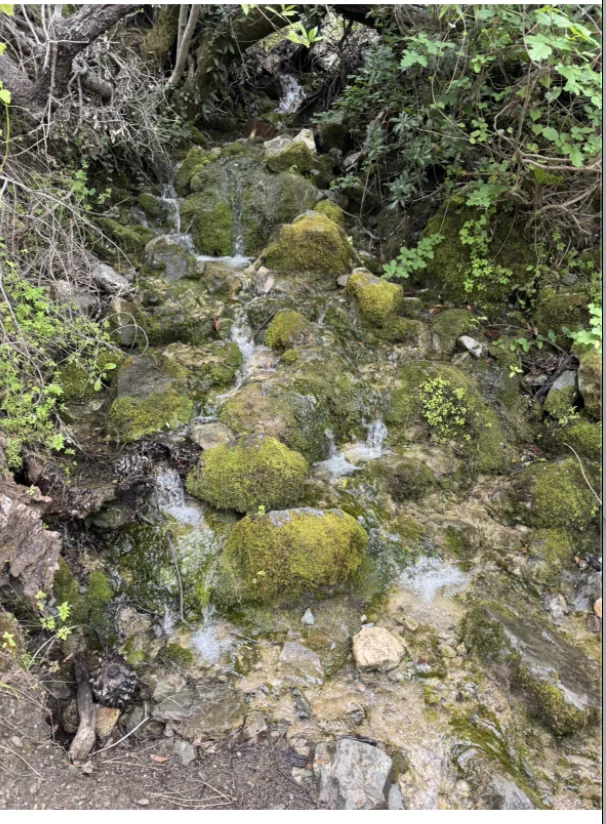
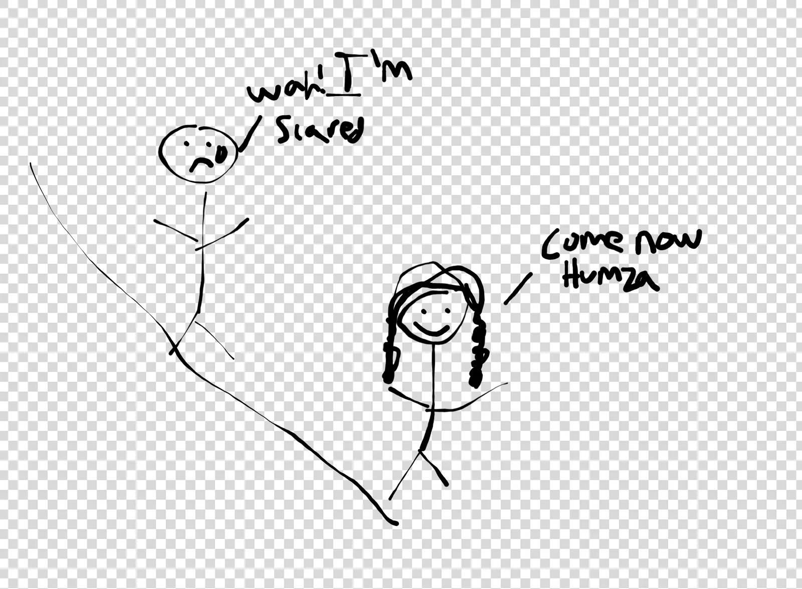
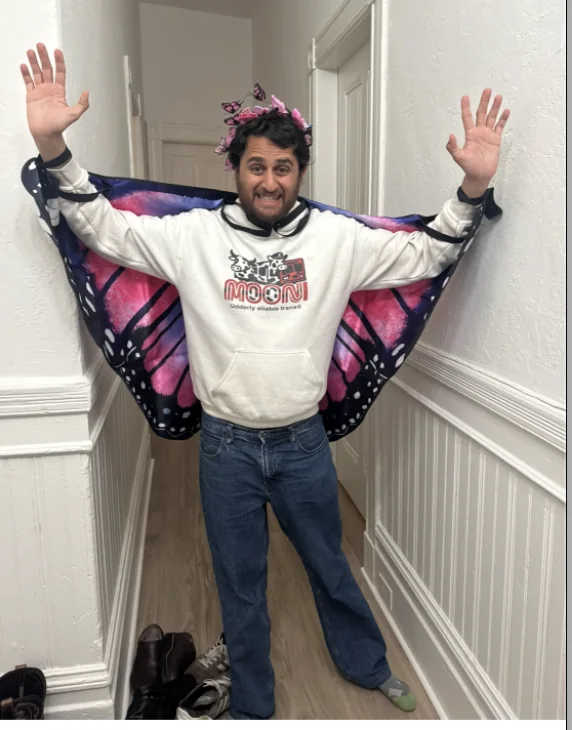
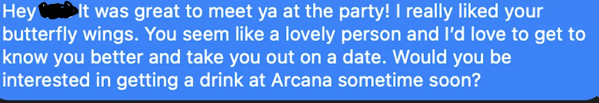

Shoutouts
Happy birthday to “The Taco”! Can’t believe you’re exactly one month older than I am! Congrats on making it into the 30 club! I’ll be hitting you up for advice in a bit less than a month.
Monday
Today after work I got dinner with “Top of the Rope”. We went to Tacqueria El Buen Sabor and caught up on life. One key lesson I tried to drill into her is to always apply for a job even if you don’t think you’re qualified because you never know what might happen.
I remember when I was in college someone from NVIDIA came to speak and I asked him for his business card and cold emailed him about doing an internship there way back when. I interviewed and got the internship and it was a lot of fun!
I do think it can be easy to not apply out of fear of rejection but remember “Top of the Rope” and anyone else thinking about applying for something cool … just do it! As an extra tangent “Just do it” was at one point the name of a group chat that me, “The Professor,” “The Plower,” “The Quant,” and “The Taco” were in because I needed to emphasize the message.
Tuesday
Today after work I had another SF government class. This time we spent a while learning the difference between Statutory Law, Administrative Law, and Case law in the context of SF government.
Statutory law is passed by the Board of Supervisors and goes through a process where laws are first proposed either by The Mayor , The Board of Supervisors, or Commissions, then they go through the City Attorney to draft them into legislation, then they go through The Board of Supervisors to vote on, and finally The Mayor can either sign the law or send it back (I abridged this a little bit but this is basically accurate).
Administrative law are regulations coming from the executive branch of SF government. This means different departments like the Department of Public Works for example may pass regulations.
Finally is Case Law. This is determined by opinions of different courts in California including the Supreme Court of California.
Wednesday
On my way to work today I stopped by Cafe Spro for an almond butter toast. I’ve now become a regular here and the person working there, Sofia (Sophia?) knows me by name. She has a really vibrant sense of style which I find fun. Right now we’re only at the point where we say hi but who knows maybe we could get to the point where we ask each other what our weekend plans are. Anything is possible.
Today after work I went to Midnight Runners. It was Earth day so in honor of that we did a new run through Golden Gate Park which was very convenient for me.



The run itself was fair enough. I saw one of “The Dentist’s” friends who I don’t know well enough to give a nickname for.
After the run we go to the bar where I talk with a couple people about the fact that I’m behind on the newsletter and need to go home to finish it. They jokingly offer to write some of it for me and I tell them to write about the pitch a friend event I went to with “The Fisherman” two episodes ago. When I showed one of them the outfit I wore she said I dress better than her boyfriend which gives me some hope. I continued vibing with one of the other people at the bar until I realized I really needed to go home and write my newsletter.
Thursday
Today during work we had a standup. I don’t usually mention these but previously our manager said we need to keep our standups briefer. To that point I timed our standup and it came in at 2 minutes and 46 seconds. When I told everyone I did that people found it really funny and I got some compliments that “Oh I think our team is the most positive because we have Humza” which made me really happy.
After work I go to bar night with “The Philosopher,” “The Mosher,” “That’s Nuts,” and at first a bit surprisingly not “The Twitch Streamer”. It was his actual birthday yesterday so he had the night off.
At bar night I wound up getting an unexpected deep dive on the Waterloo college admission system. Here’s about what I can remember from it
Waterloo college admission is confusing and depends on the province. Alberta does some weird average of grade 12 classes that “That’s nuts” told me. I think they take your top 5 academic subjects and average them into a score and admissions is mostly based off of that.
For some majors you have to take some sort of exam like the Euclid exam which I think is meant to be like the SAT but with a cooler sounding name.
Friday
After work I caught up with “The Quant,” “The Fisherman,” and “The Shadow Brigade” who happened to be in town for the weekend. We went to a burger place in Saluhall which was pretty good. I recommend getting the smash burger with fries.
We learned a lot about “The Shadow Brigade’s” army training down in SoCal and the fact that she can accurately shoot a gun 26+/40 times which is pretty impressive. There's a reason she’s my Shadow Brigade after all.
After hanging out with them I went to Zombie Village to hang out with “The Philosopher” and “The Bartender”. They were having some special Colombian DJ there which was fun. I’ll admit I can’t tell Colombian music from other Latin American music but as the youth would say “it was a bop”. They also had deep friend empanadas which I would have been really down to try except for the fact that they were $12 which seemed too much for an empanada.
“The Twitch Streamer” was on his way but sadly I was really tired at this point seeing as it was close to 1 and all that. I generally am pretty good at getting up early seeing as I”m rarely asleep past 6 but I wish I could combine that with the ability to stay up late as well. Then I would be unstoppable.
Saturday
Surprisingly the day began with me doing Midnight Runners on a Saturday. A rare occurrence motivated solely by the fact that I could see “The Enabler,” “The Dentist,” and “La Tacqueria Royalty” who all showed up for this pastry run. Because I have other plans immediately after this I wound up doing the run with a backpack containing 3.3 pounds of bottles of banana water, a spare change of clothes, a spare set of shoes, and some other random stuff meaning this run was harder than usual. On top of this they decided to make it a hill run which made it even worse. It was great to catch up with the whole gang even if it did mean some sucky hills.

I really like putting newsletter nicknames in my Strava even though the intersection between Strava followers and newsletter readers can be broken down as 3 people who frequently see me on Strava and read the newsletter, 1 person who sometimes sees me on Strava and reads the newsletter from time to time, and 2 people who rarely sees me on Strava and reads the newsletter frequently and 36 other people who follow me on Strava and have no idea what the newsletter is.
The run was hard but I hung in there. The hill up to Inspiration point was what can best be described scientifically as a girthy pile of doodoo. But I got my resistance training in. For a bit of fun when we did the group picture I wore my gengar hat (which I did not wear the rest of the run because I still need to use it sparingly).

After the run we all went to b.patisserie where we got some pastries. Well everyone else did and I pulled a Humza because there wasn’t really anything there that worked with me. It was nice to catch up with everyone and chat for a while. I was thinking about leaving early and going to trash pickup but I realized sometimes its better to full ass one thing then half ass two things. Especially since I would have to leave trash pickup right after to go to something else anyway.
Once this ends I head over to Walnut Creek to meetup with “The Shadow Brigade” as we plan to hike around Mt. Diablo. We debated a few trails but eventually decided on doing a hike around 7 waterfalls.
The hike itself was overall pretty good in my opinion. The views were good, the waterfalls were (in my opinion) good.


The worst part was definitely the slippery and narrow downhills. I thought after going urchin foraging I had completely conquered my fears of slipping and falling. Sadly that was not the case as I got nervous as I was slowly and slipperly going down the hills. I was quite nervous and mildly screamed a couple times. I also muttered under my breath loudly enough that “The Shadow Brigade” could hear me which was less than ideal.

I managed the hills in the end even though there was a time when I did almost slip which did legitimately scare me. The key lesson to take away here is that hiking poles could actually be useful for me. On the plus side I do think my shoes had less traction than “The Shadow Brigade’s” which probably contributed to a degree. On the plusser side I’m glad I changed shoes and didn’t wear the concrete running shoes I had earlier. That would have been a miserable time indeed.
I don’t think “The Shadow Brigade” was quite as impressed by the hike. Part of the problem was apparently there were supposed to be butterflies on the trail and we only saw a single one. On that day though I did learn some wisdom from “The Shadow Brigade” that I will never forget “There may have only been a single butterfly but there were waterfalls and wild flowers and those start with W!” The lesson here being to always look for the W’s in life which is the kind of profound insight you really get away from the city to find.
After the hike we go to get Thai food which “The Shadow Brigade” is able to get the army to pay for which means I’m indirectly paying for it with my tax dollars.
I part ways with “The Shadow Brigade” and head back to SF where I go to a housewarming party hosted by “The Menace". There I see “The Yogi,” “The Writer,” a college friend of “The Yogi” and some of “The Menace’s” other friends. The party itself was quite fun. I got to chat with a fair number of people, catch up with the above characters who I haven’t been seeing much and meet some cool new people.
One of the coolest people I met was this Ph.D student at UCSF. He’s really into electronics and hardware on the side. As we were talking about hobbies and interests he came up with a great new question I can ask people about their hobbies or interests “How do you think the skills you learned by doing this apply outside of the domain”. I talked about this in the context of comedy and improv and he talked about it in the context of scientific research. He was a really cool guy and as a tangent I think “The Notetaker” would get along really along with him. I want to set them up as friends, I think it would be fun!
The highlight of the party though was when I met this girl who lives in Marin thats super cute. She was wearing this butterfly outfit that was really fun and whimsical. I asked to borrow it for a pic and this is what it looked like

There may not have been any butterflies on Mt. Diablo but one could be
Seen in Duboce
I talked with her for a while and she seemed really fun and vibrant. And of course cute. She also really liked my Mooni sweater and said she is big into puns! I know for a fact I want to get to know her more. A couple times throughout the party we cross paths. One such time we even danced togher and twirled each other. In the grand scheme of things I know that probably doesn’t mean much but it reinforced that I had to at least try and if I didn’t I’d be a damn idiot. I may have a lot of problems but I gotta try anyway right.
Around midnight I wind up heading out but not before getting her number. When I get home I text her and ask her out on a date

I included the full message mainly to show that I was unambiguous with what I wanted. I didn’t want to do the thing where I ask her out but it’s ambiguous whether it’s a date or just as friends. Screw that I’m making my intentions known and not beating around the bush.
Spoiler alert I never get a response but thats ok. I was really tired as I left but maybe I should have worked up the energy to ask her in person instead. I’ll admit it was noisy so I didn’t really want to do that but maybe thats just an excuse.
I know some people say you shouldn’t text right away (I did it right when I got home which was about a half hour later), but I don’t know those kind of rules feel really stupid to me. I’d rather reajust say what I want to say when I want to say it and not play games.
But most likely she just wasn’t interested which is totally fine but I knew if I didn’t I’d regret it so that’s all well and good.
Sunday
“The Professor” is back in town so I meet up with him for an early breakfast at Cafe Spro! This is big because it means I finally completed my series of treating people to meals! It’s cool to see all the different forms this has taken from the big meal at Kogi Gogi, a bunch of 1:1s, and even an all day trash pickup session. We talked about our dreams, how you can store water in the desert, and even JJK. Of all the bits I’ve done this may have been of the more wholesome ones (certainly more so than the Jamaican accent anyways).
But back to the topic at hand, I haven’t seen “The Professor” since I surprised him in Vienna last year so when he texted the group chat asking if anyone wanted to do early morning breakfast I set BET. “The Pickleballer” joined us not too much later and we hung out for a while longer. We went to my apartment briefly which was just as “The Professor” remembered it, we went to Duboce park, and then we went to go pick up a birthday card for “The Taco”.
After that we went to Plow for brunch with “The Shadow Brigade,” “The Quant,” “The Taco,” and “The Plower” who I hadn’t seen in almost as long as “The Professor”. Naturally I didn’t eat anything at Plow mainly out of principle given that I hate the long wait there but I took joy both in seeing everyone again and the fact that when I put our name down for a table I gave Wuhan which put a smile on my face for perhaps some of the wrong reasons.
After brunch we went to Garden Creamery where “The Professor” was greeted as “Mugicha”. For context last year I got Garden Creamery to bring back a flavor of ice cream called Mugicha (roasted barley) that he really likes. I asked the person I know there if they could bring it back again since he’s in town and she said the owners agreed to do it sometime within the two weeks “The Professor” would be here. I’m glad the person who works there that I know still remembers him :D. I know you don’t read this newsletter but I still want to thank you here nonetheless for helping me bring back the Mugicha twice. I do really enjoy chatting with ya whenever I go to Garden Creamery and congrats on graduating college and getting into med school!
After that we go to “The Taco’s” apartment and play some board games. It’s a bit like old times when me, “The Professor,” “The Taco,” “The Quant,” and “The Plower” would all go and play board games. It has a very 2024 feel to it. We played Avalon which was both fun and a bit humbling since I learned why some of my custom variants are a bit broken and don’t really work as far as game mechanics go but I still quite enjoy them.
Once that’s over I go home and work on my government homework.